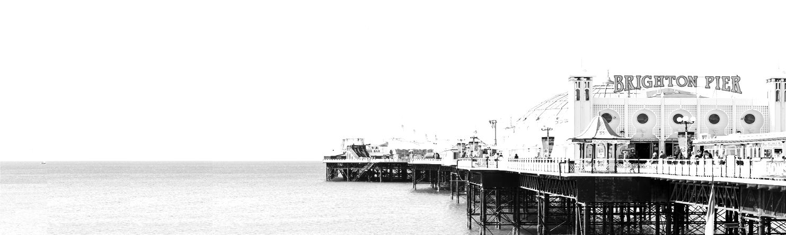

35rd EACSL Annual Conference on Computer Science Logic 2025

25-29 January 2027, Brighton, UK
About
Important Dates
| Abstract submission: | Wednesday, July 8 (AoE) |
| Paper submission: | 15 July 2026 (AoE) |
| Notification: | 15 October 2026, Brighton time (accepted papers) |
| Final Version Due: | TBD |
| Conference: | 25-29 January 2027 |
Sponsors

Covering Publication Fees
Providing Free Submission Service
Call for Papers
Topics
Topics of interest include, but are not limited to:- Automata and games
- Automated deduction
- Category theory, categorical logic, and topological semantics
- Coalgebra
- Computability
- Concurrency and distributed computation
- Constructive mathematics
- Cyclic proofs
- Database theory
- Decision procedures
- Denotational semantics
- Description logics
- Domain theory
- Effects
- Equational logic and term rewriting
- Finite model theory
- First-order logic
- Formal methods
- Foundations of programming languages
- Fame semantics
- Higher-order logic
- Interactive theorem proving
- Intersection types
- Knowledge representation and reasoning
- Lambda calculus and combinatory logic
- Linear logic
- Logic programming and constraints
- Logical aspects of AI
- Logical aspects of computational complexity
- Logical aspects of quantum computing
- Modal and temporal logic
- Model checking
- Nonmonotonic reasoning
- Probabilistic methods
- Program synthesis
- Proof theory
- Realizability
- Security and privacy
- Specification, extraction and transformation of programs
- Type systems
- Type theory
- Verification and program analysis
Submission
Submitted papers must be in English and must provide sufficient detail to allow the Programme Committee to assess the merits of the paper. Full proofs may appear in a clearly marked technical appendix which will be read at the reviewers' discretion. Authors are strongly encouraged to include a well written introduction which is directed at all members of the PC.
The paper should be submitted via HotCPR: (the link will be available soon, and opened in early June)
The CSL 2027 conference proceedings will be published in the Leibniz International Proceedings in Informatics (LIPIcs), see here.
Authors are invited to submit contributed papers of no more than 15 pages in LIPIcs style (not including appendices or references), presenting unpublished work fitting the scope of the conference. Papers may not be submitted concurrently to another conference with refereed proceedings. The PC chairs should be informed of closely related work submitted to a conference or a journal.
Papers authored or co-authored by members of the PC (but not PC chairs) are allowed.
The submissions are lightweight double-blind:
- Authors are not allowed to put their name on the paper, and they should avoid revealing their identities in text (references to previous or related work should be in third-person).
- Authors are allowed (and even encouraged) to disseminate the work on public repositories (e.g. on arXiv or their websites).
- The identity of authors will be revealed to reviewers after all reviews have been written
Papers authored solely by students or for which students are the main contributors will be considered for the Helena Rasiova award.
Committees
PC Chairs
Program Committee
Local Organizers
Venue and local information
The conference will be held at the University of Sussex, Brighton, UK.
The University of Sussex is located in the Falmer campus.
The campus is easily accessible by public transportation, with regular bus services connecting it to the city center and nearby train stations.